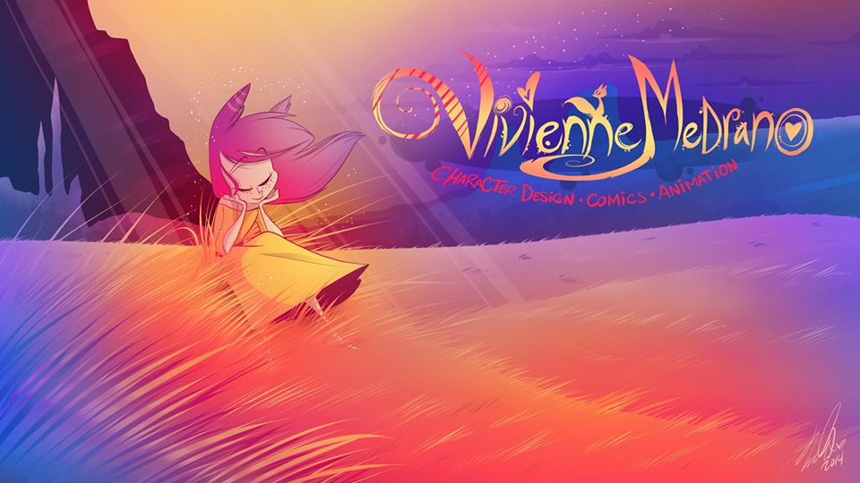

About
Vivziepop also known as Vivienne Medrano is a Salvadoran American born and raised in Maryland. She studied at the school of visual arts in New York City and graduated in 2014. Vivienne is an artist and animator she created comics, animatic shorts, stories with her own original characters and even her own cartoon shows. After releasing her webcomic "Zoophobia" she built an audience and fanbase and started to work on her animations for her youtube channel as a career. In October 2014 after graduating from SVA Viv uploaded a fan-animated music video on Youtube with one of her characters JayJay from 'Zoophobia' sang 'Die Young' by Kesha. The video increased a lot of views currently over 40 million views and 96% approval rating on Youtube.
In Summer of 2016 Vivienne studied at Gobelins Summer school in Paris where she learned how to create short animations.
Career
In July 2016 she moved to California before she started developing her first show 'Hazbin Hotel,' she worked as an animator on a online series called 'Too Loud!' created by Nico Colaleo on DreamworksTV. 